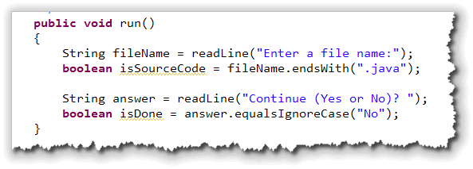
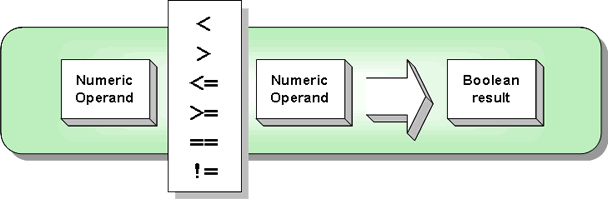
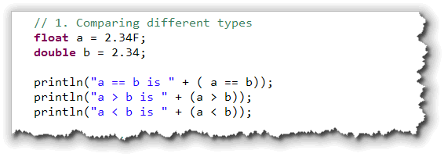
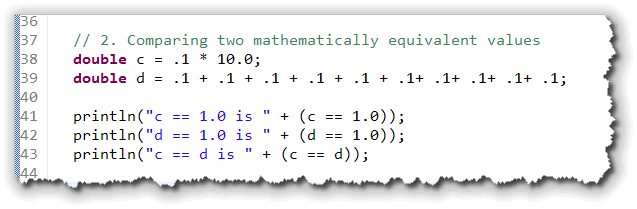
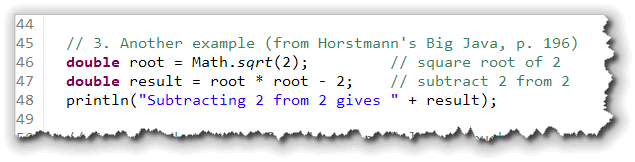
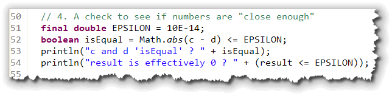
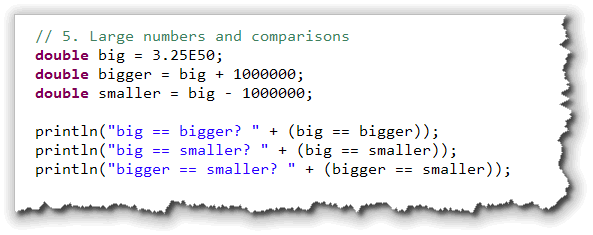
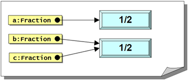
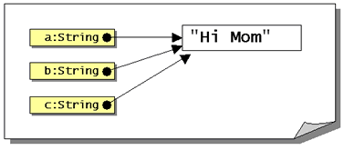

George Boole was one of the most
famous mathematicians of the 19th century. Born in 1815 to a
working-class family, he was a self-taught child prodigy in
both science and Latin. Even though he couldn’t afford to attend
college, he became a professor of Mathematics (and later
the Dean of Science) at Queens College in Cork Ireland.
George Boole was one of the most
famous mathematicians of the 19th century. Born in 1815 to a
working-class family, he was a self-taught child prodigy in
both science and Latin. Even though he couldn’t afford to attend
college, he became a professor of Mathematics (and later
the Dean of Science) at Queens College in Cork Ireland.
Boole’s 1854 paper, "An Investigation Into the Laws of Thought, on Which are Founded the Mathematical Theories of Logic and Probablility" detailed the relationship between algebra and logic. This paper was the foundation of the discipline now known as Boolean logic or Boolean algebra, and these are the ideads that underly much of today's computer technology.
George Boole died on 8th December, 1864 after walking to school in the pouring rain at the end of November. He proceeded to teach in wet clothes, and, as a result he contracted a chest infection which ultimately turned into pneumonia.
His condition was made worse by his wife's attempts to help
him.
 She subscribed to the widely held view that the cure
should match the cause and so while George took to his bed,
she threw buckets of cold water over him.
She subscribed to the widely held view that the cure
should match the cause and so while George took to his bed,
she threw buckets of cold water over him.
Boole is still honored in his native Ireland. Here's a rare picture of one his most famous later disciples, in front of the Boole library in Cork Ireland.
In this lesson we'll take a closer look at the
boolean primitive type, which contains the
two values true and false, and which was
named after George Boole. Then, we'll put the
the boolean type to work making decisions.
Note that the boolean primitive type
is all lowercase (just like all of Java's keywords). There is
also a Boolean class, which is a wrapper
class, like the Integer and Double
classes. Finally, when we talk about a true/false value
in the abstract, it is customary to capitalize it, since it
is named after old George. Thus in the text and in these lessons,
you'll see the sentences like this:"The logical operators create
Boolean values which you can use as part of a Boolean expression
or store in a boolean variable."
The boolean Type
In earlier lessons, you learned that Java has four
primitive type families: integers, floating-point numbers,
characters and Booleans. Up to now, you've learned quite
a bit about each of these families except for the
boolean type.
The char type consists of all of the Unicode
values, while the byte type consists of all of
the whole numbers between -128 and 127. The boolean
primitive type is simpler: it consists only of the two literal
values true and false.
As with the other primitive types, you can have boolean
variables and boolean literals. To write the
boolean literal values you simply write true
or false. Make sure you don't accidentally write
True or TRUE; that's not the same thing.
C and C++ programmers are often lulled into a sense of security by Java's familiar syntax. Boolean types are one of the areas where C and Java differ. In C and C++ Boolean values are convertable to numeric values (0 being false and everything else being true). This is not the case in Java. There is no conversion between numeric types and Boolean types; they are completely separate concepts.
Boolean Variables
You create a boolean variable the same way
you create an int, long, or
double variable: you start with the type,
select a name, and then (optionally) initialize your variable.
Here are two boolean variables definitions:
boolean isEmpty = true;
boolean isDone;
The same rules apply to boolean variables as
apply to integer or floating point variables. If you fail
to initialize a boolean local variable,
then you must assign a value before using the variable
or Java will refuse to compile your code.
| Naming boolean Variables |
When you choose a name for a boolean variable,
try to think about how the variable will be used. Try to
name your variables so that when the value is true,
your conditional expressions can be phrased "naturally"
like this:if (isVisible) ... if (isFinished) ... |
Boolean Methods
Most students easily understand methods like Math.Random(),
or Math.pow() which return the results of a numeric calculation.
We can also have methods that return Boolean, that is, true or
false, values. These Boolean methods are often
also known as predicate methods.

When you call a Boolean method you'll often use a
boolean variable to store the result that the method
returns. Here are some examples using a few Boolean
methods in the String class:

Here's what this code does:- The
readLine()method asks the user to enter a file name, and the answer is stored in theStringvariablefileName. - The
StringpredicateendsWith()method is used to see if the variablefileNameends with ".java". If it does, the method returnstrue; if not, the method returnsfalse. The returned value is stored in thebooleanvariableisSourceCode. - The user is again asked to respond if
they wish to continue by typing "Yes" or "No" and
their answer is stored in the
Stringvariable namedanswer. - The
booleanvariableisDoneis initialized by calling theString equalsIgnoreCase()method, checking against the value "No". If the user types "no", "NO", or "No", thenisDonewill be set totruewhile anything else will set it tofalse.
Even though this last example allows for
the user to type their response in any case, it's not
really an example of good programming. For instance, if
the user types "nope" or "N", isDone will
be set to false and the user will continue.
A better design would be to check against the String
"Yes", and then use the logical NOT operator to
reverse the sense of the condition. You'll learn how
to do that next week.
We'll look at some more predicate functions in the
Character wrapper class shortly. Let's move on
now and see some other ways to generate Boolean
values.
The Relational and Equality Operators
Although boolean literals and boolean variables
can be useful, most of the time, you'll create the
Boolean values used by your program by making use of Java's
relational or equality operators, often in the context of
a selection or iterative conditional statement.
A relational operator compares two values and returns a Boolean value based on a question about the relationship of one value to the other. (That's why they're called the relational operators.) Using a relational operator is a little like the parlor game, "Twenty questions." You use the operator to "ask" if one number is larger than, smaller than, or equal to, another. The operator "responds" with true or false.
Java has six operators which are used to compare numerical values. Here's an illustration of the use of each:
| Example | Result |
|---|---|
| a < b | true if a is less than b; otherwise false |
| a <= b | true if a is less than or equal to b; otherwise false |
| a > b | true if a is greater than b; otherwise false |
| a >= b | true if a is greater than or equal to b; otherwise false |
| a == b | true if a is equal to b, otherwise false |
| a != b | true if a is not equal to b, otherwise false |
Those operators that require two symbols (<=, >=, ==, and !=) must be typed with no space between the two symbols.
Some textbooks reserve the term relational operator
for the first four of these,—and call the last two the equality
operators. Often you'll see all six operators called the relational
operators, with the first four "non-equality" operators called the
inequality operators, instead of the relational operators.
I'll use relational to refer to the whole group,
but will still use equality operators to refer to
== and !=.
Relationship Pitfalls
If you come from another programming language, here are some potential pitfalls you should look for:
- The "is equal to" operator is
==, not=, which is the assignment operator. The error message you'll encounter when you confuse these two is not very informative. Nevertheless, it's better than C++, where you may not even get an error message. - The "not-equals" operator is
!=, not <>. Again, the error message you'll get if you accidently type this is not very helpful. - Make sure you use >= for greater-than or equal, and not =>, which is not a valid symbol. (Of course, the compiler easily catches this one.)
The relational operators act a little differently when applied
to primitive numeric types than when applied to objects
like Strings. Let's look
at the numeric types first.
Numeric Relations
Each of the relational operators requires two primitive
numeric operands, and the expression produces a
boolean (true/false) result.
You can usually mix any of the primitive numeric
types, including the char type in
relational expressions. When you compare char
values, the underlying Unicode value is used as if it were
a short. You normally don't have to worry about
mixed-type comparisons, like you do with mixed-type expressions;
for the most part, they will work just like you'd expect.

Here are some examples:
// Variables
byte b = 2;
short sh = 65;
double a = 2.34;
float f = 2.34F;
char c = 'A';
boolean result;
// Some relational expressions and their results
result = b > sh; // false
result = c < a; // false
result = f == a; // false
result = f < a; // true
result = c >= a; // true
result = c = sh; // true
As you can see, you can compare characters, integers (both large and small) and floating-point numbers, with wild disregard for the type of each operand. There is, however, one place where you must be especially wary: when you compare two floating-point numbers.
Floating-point Relations
Even though you can compare numbers without regard for
their types, that doesn't mean that the results will always
be meaningful. As a general rule, you should never
directly compare two floating point numbers using the equality
operators (!=, ==)
because of the "round-off" errors that can occur.
Here's a short console-mode program, BooleanExamples.java, that illustrates many of the pitfalls that can arise when comparing floating-point numbers. Let's look at a couple of instances:
Different Types
In the first section, two floating-point variables (a and b)
are created and initialized using the values 2.34 and
2.34F which are logically identical.
Then, these values are compared using the relational operators
and the result of that comparison is printed:

If you run the code, you'll see that the two values are never equal, because they have different bit patterns that can't be accurately compared. Many times the comparison will be correct, but often it won't, so you can rely on it.Comparing Calculated Values
Calculations involving floating-point numbers are done in binary, so even if all operands have the same type, you cannot be sure that the bit-patterns will match exactly.
Here are two examples. Look at the variable
definition for c on line 38,
which multiplies .1 times 10, yielding (theoretically) 1.0.
Note then the comparison of c with 1.0 on
line 41. Is it true or false?

I'm sure you realize that this should be true, and that's what Java reports. Well, if that's so, what about the variable d defined on line 39? Obviously, adding .1 ten times is mathematically the same expression as multiplying .1 times 10, yet Java considers this one to be false. Here's a second example from Cay Horstmann's Big Java textbook.

Here he uses theMath.sqrt() function
to get the square root of 2, multiplies the result by itself,
(yielding, theoretically, 2), and then subtracts 2.
This result should be, mathematically, 0. Instead, Java reports on
line 48 that the answer is 4.440892098500626E-16.
Programmers encountering this behavior for the first time, often think that this is a bug, but it is not. This is not a bug in Java, or its ability to add. This is just the way that binary floating-point numbers work. It's in the nature of the numbers themselves.
Don't compare floating point numbers using the equality operators.

A Solution To the Problem
To accurately compare floating point numbers after a calculation, you'll have to first decide what is "close enough". If you buy gasoline, for instance, you might notice the price often priced to include 9/10 of a cent, but no one ever pays 9/10 of a cent—because our currency doesn't have amounts less than a penny. So, if you were comparing two floating-point numbers where it was important to be accurate only to a penny, you'd want the number 1.256 and 1.257 to be "equal".
Since type double is accurate to about 16 digits of
precision, we can generalize by using a fudge factor (often
called EPSILON) of 10E-14. Using this scheme, two double
values are equal if the absolute value of their difference is
less than or equal to EPSILON). Here's some Java code that
does that for the examples we've seen so far:

When you run this, you'll see that the variables c and d are effectively equal, and that the variable result is effectively 0.Caveats
This doesn't work perfectly if the numbers are very large—in
the millions—in which case you may need to make your EPSILON
factor larger. If the numbers are large enough, your problem
will be the opposite: numbers that are logically different will
be identical when it comes time to compare them.

For instance, if you have adouble
variable containing 3.25E50 and you add a million, (or
subtract a million), you'll still end up with
exactly the same number. A double can
store very, very large and very, very small numbers, but it
both cases, only fifteen or sixteen digits are significant.
Object Relations
In addition to comparing primitives, you can
also use the equality operators to compare objects and
Strings. We're not really concerned with
comparing objects at this point, but learning how to
correctly compare Strings is really
important:

Unlike numeric comparisons, where you can mix your types with
abandon, you can only compare a String with another
String, a Rectangle with another
Rectangle, and so forth. (You may, however, compare
a variable of type Object with any
object type. You'll see how that works later in the course,
when we look at object-oriented graphics and attempt to
determine which item on the screen was clicked with the
mouse.)
You cannot compare String variables using the
inequality operators. These are legal expressions:
"Hi" != "Mom"; // result is true
"dad" == "Dad"; // result is false
These are illegal expressions:
"Mom" < "Dad"; // no inequality operator
JLabel b = new JLabel("Mom");
b == "Mom"; // can't compare String & JLabel
The instanceof Operator
In addition to the six relational operators that work on
numeric values, there is one relational operator that works
only on object types: the instanceof operator.
The instanceof operator is a binary operator
that returns true if the object on the left is
an "instance of" the class on its right, or if the
object belongs to a subclass of the class on the right.
Here are some examples:
Button b = new Button("Hi");
Menu m = new Menu("File");
boolean ans;
ans = b instanceof Button; // true
ans = b instanceof Component; //true
ans = m instanceof Menu; // true
ans = m instanceof Component; // false
Notice that the object b is both a Button
and a Component, but that the object m is
not a Component. (You don't really need to pay
much attention to this operator at this point. We'll look at
this in greater depth when we study objects and inheritance.)
Equality vs Identity
When you use the equality operators
with Strings or objects, you are comparing the
identity of the two objects, not their contents.
Specificially, you are asking, "do both object references refer
to the same object?"
Here's an example using Fraction objects.
(Fraction is a user-defined class that contains
a numerator and denominator. This is the same example that
I showed you back in Unit 2.):
Fraction a = new Fraction(1, 2);
Fraction b = new Fraction(1, 2);
Fraction c = b;

Remember that object variables contain the address, (a reference), of the object they refer to. In this example, twoFraction objects are created, (using
new), and the reference stored in the variables
a and b. A third object variable, c,
is the created, and the value stored in b is copied
to c, using the assignment operator.
All three variables refer to Fraction objects that
contain the same value, ½.
Here's what memory looks like after the variables are created.
Now, let's use these Fraction variables in
some relational expressions, and look at the results:
a == b; // false - different Fraction objects
b == c; // true - same Fraction object
a == c; // false - different Fraction objects
Obviously, when it comes to objects, the == operator
tests the identity of the object referred to by the two variables,
not the value contained in the objects themselves.
String Relations
String objects, work just like Fraction:
if you use the equality operator, you are asking whether these
two String variables refer to the same
String object.
 Let's take this to heart and perform the same test we did for
Let's take this to heart and perform the same test we did for
Fraction objects. We'll create three String
variables, a, b, and c, and we'll assign
the same String value to the first two. Then,
we'll draw a picture like we did for Fraction
objects. We should end up with something like this:
String a = "Hi Mom";
String b = "Hi Mom";
String c = b;
Unfortunately, when we write and run exactly the same relational
tests we used with our Fraction variables,
we find that all three
expressions come back true! What's going on here?
Under the Hood
Well, it may look like Java is treating String
objects specially, comparing the contents of each String,
like Pascal, Visual Basic, and C# do.
Don't be deceived, however;
that's not what's happening at all!
Our test program reports such unexpected results because
our mental picture of what
happened in memory is faulty. Since String
objects are immutable, Java automatically shares the
same actual String between several references.
This only occurs with literal
String objects, not with any other object types
and not with string variables.

In our example, Java actually stores the characters "Hi Mom" only once. The line where theString variable
b is created does not create a second copy of
the words "Hi Mom". Thus, all three String variables,
a, b, and c, refer to exactly the same
characters in memory as shown in the picture here.
Comparing Strings
The bottom line is that you should not use the
relational operators to compare Strings.
The answer you get back is almost always wrong! Instead,
you should always compare String objects
using the methods in the String class. Let's
look at three of them.
equals()
The equals() method returns true
if the contents of two Strings exactly match,
and false otherwise. Here are some examples:
"cat".equals("cat"); // true
"cat".equals("Cat"); // false
Notice that you can call String methods
using literals like "cat" as well as variables, because
String literals are actually objects.
equalsIgnoreCase()
Often, you want to make a comparison without taking case
into account. The equals() method uses the
underlying Unicode value to make its comparisons, so that
"Bob" is not equal to "bob".
This method returns true if the contents of
two Strings match when case is not considered,
and false otherwise. Here's an example:
"cat".equalsIgnoreCase("cat"); // true
"cat".equalsIgnoreCase("Cat"); // true
"cat".equalsIgnoreCase("dog"); // false
compareTo() or compareToIgnoreCase()
The two equals() methods only allow you to
see if two Strings contain the same words. They
don't allow you to check if one is lexigraphically
larger or greater. (In other words, you can't tell if it
appears before or after in the phone book or dictionary.)
To do this, you need to use one of the compare()
methods. Instead of returning a boolean value,
these methods return three different possiblities:
- If both strings are equal then the methods return 0.
- If the
Stringon the left appears before the one on the right, then the methods return a negative number. - If the
Stringon the left appears after the one on the right (that is, the method parameter), then the methods both return a positive number.
Here are a couple of examples:
"cat".compareTo("cat"); // 0 - equal
// "cat" > "Cat" (Unicode case-sensitive ordering)
"cat".compareTo("Cat"); // Positive
"cat".compareToIgnoreCase("Cat"); // 0
// "cat" < "dog"
"cat".compareTo("dog"); // Negative
Always compare Strings using String methods!
Coming Up . . .
In the next lesson, we'll put all of these Boolean expressions to work as we tackle to topic of selection.